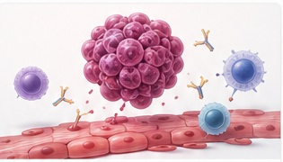

01
Tyrosine kinase inhibitor toxicity
Study vascular responses and mechanosensitive signaling, including the cardioprotective pathway involving PIEZO1.
Why do some patients experience cardiovascular injury during cancer therapy?
We use human cardiovascular models to study susceptibility to treatment-associated vascular and myocardial injury, and to investigate mechanisms that could inform cardioprotective strategies.

Modern cancer therapies can produce substantial cardiovascular complications. Clinical responses differ among patients even when treatment exposure is similar. By linking clinical phenotypes with patient-specific iPSC-derived cells and engineered tissues, we study how genetic background, drug exposure, and cell-cell communication influence cardiotoxicity.
Study vascular responses and mechanosensitive signaling, including the cardioprotective pathway involving PIEZO1.
Use iPSC cardiomyocyte phenotyping and CRISPRi/a approaches to evaluate candidate cardiotoxicity mechanisms.
Investigate therapy-associated responses in cardiomyocytes, endothelial cells, organoids, and complementary models.
Connect treatment exposures and cardiovascular phenotypes with relevant patient-derived models.
Expose cardiovascular cells and multicellular tissues to defined therapeutic agents.
Profile transcriptional, regulatory, and functional responses across cell types.
Evaluate candidate pathways and interventions in human experimental systems.
Representative publications from the Sayed Lab and collaborative research programs. Visit the Publications page for complete citations and the full record.
Learn about the platforms and people behind our work.